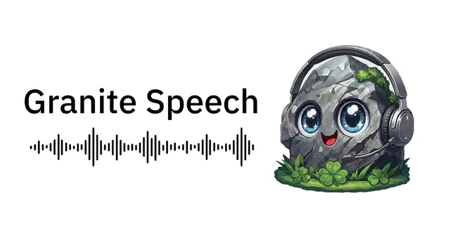

#その他
IBM「Granite Speech 5.0」公開、日本語対応と高速化で企業の音声処理を強化

IBMは2026年10月21日、Hugging Face上で音声モデル群「Granite Speech」の更新を発表しました。新モデル「granite-speech-5.0-2b」に加え、既存の「granite-speech-5.0-470m-turboctc」と「granite-speech-4.1-2b-plus」の改良版を公開しています。高精度な文字起こし・翻訳、エッジでの高速処理、複数話者の識別という企業の主要な音声業務を3モデルで分担する構成で、いずれもApache 2.0ライセンスで提供されます。
記事で取り上げている点
- 主力の新モデル「Granite Speech 5.0 2B」
- Turbo CTCは多言語化し約1.6倍高速に
- 4.1 2B Plusは会議・通話向けに改良
- 企業への影響と注意点
- 今後の展望
一次情報（出典） huggingface.co